Remix Online Store
Video: https://youtu.be/K56f1Z1Ha7c
GitHub Repo: https://github.com/Ashot72/Remix-Online-Store
Remix https://remix.run/ is a full stack web framework that lets you focus on the user interface and work through web standards to deliver a fast, slick and
resilient user experience. Remix is used for server-side rendering (SSR). This meant that both the backend and the frontend can be made using a single Remix
app. Data is rendered on the server and served to the client side with minimum JavaScript. Unlike vanilla React, where data is fetched on the frontend and then
rendered on the screen, Remix fetches data on the backend and serves the HTML directly to the user.

Figure 1
In routes folder we basically define the different routes, so the different pages, that we want to support as part of our overall web application.
Figure 2
root.jsx defines basically the main skeleton that will be wrapped around all our web components. To be precise, your page components will be included in the outlet place in root.jsx.
Figure 3
In the root.jsx file we can export a special function which is called links. That is a reserved name. Remix will be looking for an exported function
called links. It looks for such a function in all your route files and the root file, the root.jsx counts as a route file. This is our route that wraps
all other routes. We need this links function to add some extra links that should be added in the head section of your HTML document.

Figure 4
You may notice that the skeleton defines components such as Meta, Links, Scripts etc. For example, Scripts is used for injecting the client side scripts when the
page is downloaded on the client side. Meta and Links defined in head section are used by Remix to inject any metadata or any links that apply to pages.
That is how we can point at a style sheet in a regular HTML document. We add our links with that links function. This function should return an
array (Figure 3) and in that array you have various objects where every object defines one link that will be injected in the <Links /> place by Remix
when it renders your page.

Figure 5
You can see that we added links to payments which means that the style will be loaded for payments only. Remix will create a link tag
and will inject in the header section when payments (orders) page is loaded. We have this page specific approach here so that users do not unnecessary download CSS files.

Figure 6
Here, I am on the root page and download CSS files specified in root.jsx.

Figure 7
Now, I am on the payments (orders) page and downloading CSS defined both in root.jsx and in the payments.jsx file.
Figure 8
When we are using form element with React, we often add a submit handler onSubmit such as <form onSubmit={submittedHandler}>. Then we get an event in submittedHandler
function and typically call event.preventDefault. In Remix we are not going to add a submit hander. We are not going to prevent default and with Remix we are going to embrace the default.
You see that when we are going to add a category, we specify method='post'. If you have worked with HTML form elements before you might know that you can also add the action attribute
<form action=''> which enables you to add a path to which this POST request should be sent when this form is submitted. We can define the path the post request should be sent to.
Remix provides a custom Form component that works identically to the native HTML <form> element. It behaves like a normal form except that the interaction with the server is with
fetch instead of new document requests, allowing components to add a better user experience to the page as the form is submitted and returns with data.

Figure 9
Actually, we do not have to specify action attribute because CategoryForm.jsx component is already used in by add.jsx page component. We have to add some code to
add.jsx route to handle that request.
Figure 10
We have to add a new function to add.jsx file and we have to export it. This function must be called action. This is the name Remix will be looking for just as it was
looking for links. There are couple of special function which you can export in your Route files. Whatever we put into this action function it will run on the backend,
on the server not in the browser. The codes defined in this action function will also not be downloaded to the client. Remix will split the code and only execute
and store that code in the action function on the server. When exactly is this action function triggered? It is triggered whenever a non GET request reaches this Route.
In our action function we are handling the submission of a new category.

Figure 11
We submitted a new category but we also want to retrieve categories whenever categories.jsx page component is loaded, whenever a GET request is reaches this route.
That is achieved by exporting another function here, the loader function. loader like action is reserved name, and Remix will be looking for such a function, hence
we also exported it. The component will be pre-rendered on the server. On the server it will be rendered and the finished HTML code is sent to the client along with
some JavaScript code so we still have an interactive website for the end user but it is pre-rendered on the server. In this loader we should write some more backend code,
because just like the code in action, code in the loader will be executes on the backend only, it will never rich the front end, the client side.
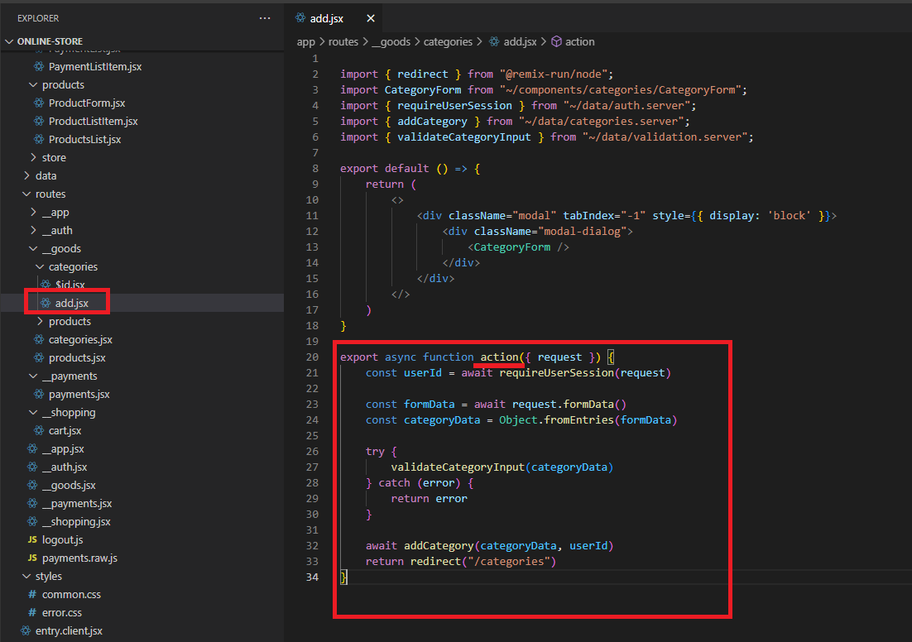
Figure 12
In our component we can access to these categories, to the data returned by the loader by using a special hook provided by Remix the useLoaderData hook. This hook simply
gives us access to the data returned by the loader. The data returned from the loader is serialized, which is temporarily converted to a JSON string. You cannot return any
rich objects here, you just get some plain data. Remix seamlessly blends front end back end together. Note, that Remix ensures that the data are loaded completely
before it serves the finished page. So, we do not need any loader.

Figure 13
What can we do in order not to submit the form twice by clicking the submission button twice? We can achieve it by also using another hook. That is useTransition hook which will be
renamed to useNavigation one in a future version. This hook gives us a navigation object. This navigation object contains some useful data about ongoing requests that might be happening
behind the scenes. We can access the state property to find out whether we are currently submitting data, or maybe loading data. If the state is not idle then we are submitting.
If submitting then we will disable the button not to submit twice and change the label to Saving…

Figure 14
Here, I am Updating Category by submitting it.

Figure 15
You see I appended XXXX to dateAdded field to trigger an error as there is no dateAddedXXXX field in the database.
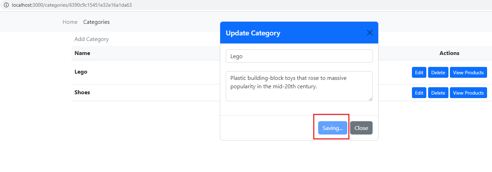
Figure16
We get this ugly error page because this default error page is being shown. Instead, we want to show our own error page. We can easily do it with Remix.
Figure 17
For example, we can go to the root component and in there we can export another new function. That function is called ErrorBoundary.
It is actually a component which we are exporting here therefore it starts with an uppercase E. This is a component Remix will display if
an error occurs anywhere in your application since we are doing this in the root component. Here we return our Error component which is the
Bootstrap alert component.
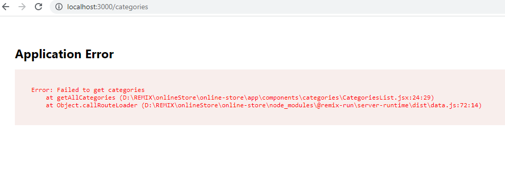
Figure 18
If we save this and reload, we will get our own error page. We are not limited to just adding this to the root component. Instead, we can add this special
Boundary component in any Route file. If we only, have it in the root component, this will simply handle all errors that occur anywhere.
Error Boundary only deals with normal errors, but there is another kind of error that could occur in case of a full stack application.

Figure 19
Let's navigate to a route that does not exist. Whenever you throw a response Remix recognizes it and renders a different component than the
Error Boundary. Whenever you throw anything but a response the Error Boundary will be used.

Figure 20
A component which we also should export here in our Routes is called Catch Boundary. It catches any error responses. And just like Error Boundary
you can add it on a per Route level or add it on the root level, or do both. The root level Catch Boundary will catch all unhandled error responses that
were generated anywhere else in the application, and the Route specific Catch Boundary will handle any error responses related to the Route.

Figure 21
Now, if we visit the page again, we will this page because of the Catch Boundary we added.

Figure 22
In Remix we add adynamic route by adding a fie name that starts with a $ dollar sign. The dollar sign in front of id or catId signals to Remix that this is a dynamic route and
a dynamic route simply means that the actual value in the path will not be dollar sign id, but instead that only acts as a placeholder for the actual value that will later be
encoded in the URL.

Figure 23
Here, I edit a category and see the category Id in the URL. This category id is interpreted by Remix as a value for this $id placeholder.
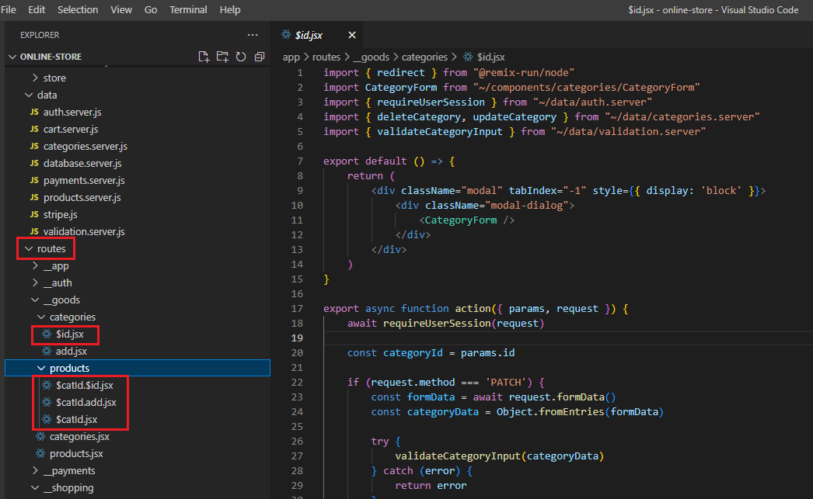
Figure 24
We can also use dot notation for nested paths in the Routes. payments.raw will be accessed as /payments/raw to get raw payments (orders) data.

Figure 25
If we go to Orders page and click on Get Raw Orders link, we will get raw orders data in a new browser's tab.
There also is an alternative to using the dot delimited notation.

Figure 26
The alternative is creating a folder such as categories in the routes folder. Remix will treat folder names under routes also as path segment names.
Remix will automatically construct a path /category which is the folder name and then the file names such as /categories/add.jsx. When we use
the folder name categories in our case for grouping nested paths together, then Remix automatically treats the file categories.jsx which carries the same
name as the folder just with a file extension since it is a file. It treats categories.jsx file as so-called layout component for those nested routes.
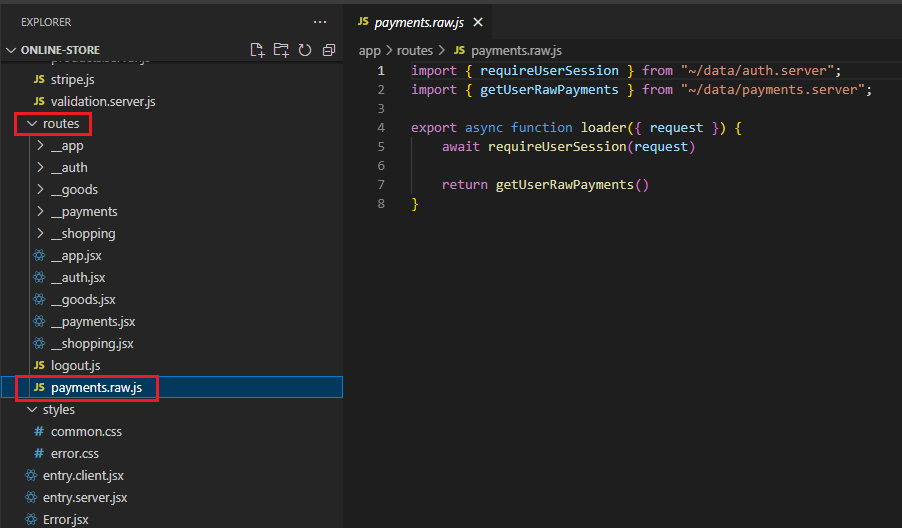
Figure 27
This is the
component page matching /categories/add route.
Figure 28
If we do not have a layout component like categories.jsx and have index.jsx in a nested folder instead (not the case in here as it is not a nested folder) then index.jsx will be called.
index.jsx is a special file name in the Remix world. It basically denotes the main page that should be loaded for a given path.

Figure 29
Main index.jsx file matching the root route.

Figure 30
Remix introduces pathless layout routes. Pathless layout route is a layout route that we can add to add an extra layer level of nesting without, that is the important part,
without adding a new path to the URL. We added a folder __goods and the two leading underscores are important because this signals to Remix that this is a
pathless layout route. Just creating that folder is not enough though. We also have to create a file called __goods.jsx. Here again the two leading underscores are
important. The part after the underscores, is up to us for both the folder and the file but it should then be the same. The folder name should match the file name.
The special thing is that this now allows us to add a layout component that does not introduce a new a new path in the URL because wd do not want to have
/app/categories/add for example. Instead, it should still be /categories/add but we want to have an extra wrapper component and that is precisely what this
pathless layout component here will do for us. The styles specified in links() function will be available for all the routes in the __goods folder. With this pathless
layout component we can display different navigation bars for different sets of routes.

Figure 31
For example, Home, Shopping Cart or Orders page you will have the same navigation.

Figure 32
When you are on Categories page then you see a different navigation, Shopping Cart and Orders links are missing. Since we added those pathless layout routes it is super easy to load these
different navigation bars. Instead of using one and the same navigation bar and header for all pages by including it in the root component we can added it in __goods layout component
which is <CategoriesHeader /> (Figure 30).

Figure 33
In __payments.jsx file and in the other pathless layout routes we include the full header bar <MainHeader />

Figure 34
We have another important tool provided by Remix with which we can work. I tis called Resource Routes. Till now we have seen that all these routes load pages. When we click on a link, we see a page.
This is the most common use case. Sometimes we want to have certain links to load data instead.

Figure 35
Doing that is pretty straightforward. We just export loader() function. As we saw this function load the data for the page and the page can then use that data with help of
useLoaderData. In most cases we use loaders in conjunction with components for which they load data but we can use loaders standalone to just return some data. So, in the
code we have a loader that returns some data and does not have a connected component. If you click on 'Get Raw Orders' in Orders page (Figure 36) you will see your orders
data in a new browser's tab.
Figure 36
For our Remix online store, we use MongoDB Atlas. It is a database hosted in the cloud and we can get I started for free.
Figure 37
In Network Access page we added 0.0.0.0 IP address to access from everywhere. In order talk to database, we will use third party library which will significantly
simplify the database interaction. This library is called Prisma https://www.prisma.io/. Prisma is a library that simply makes it very to write code, which under the hood
will be translated to database queries. After installing Prisma we run npx prisma init –datasource-provider mongodb command to work with MongoDB.
Figure 38
What this did is it created a new prisma folder and in there a schema.prisma file. In that file we basically set up some things that will allow us to work with mongoDB.

Figure 39
It also creates .env file which contains a connection URL that is used to connect to database.
Figure 40
The first thing that we should do is connecting our application to database.
Figure 41
Here we copy this URL, set the password and replace it with the default path of DATABASE_URL in the .env file.
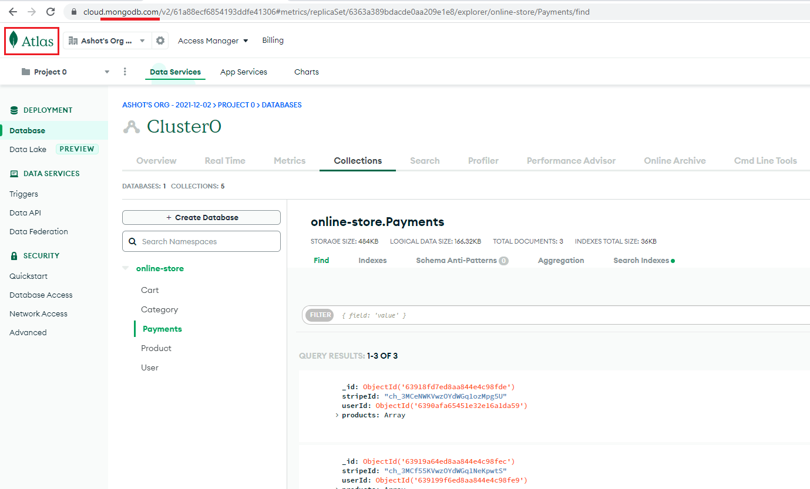
Figure 42
With prisma installed, it is time to tell prisma how our data should look like.
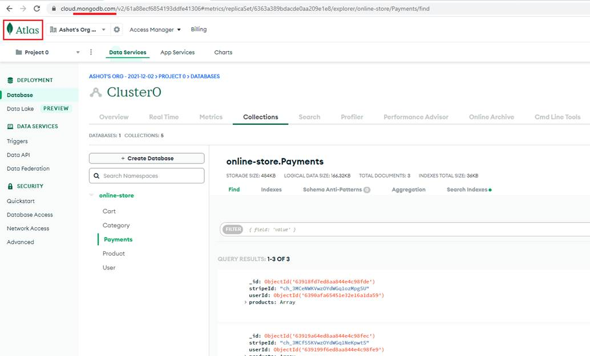
Figure 43
In data folder you see database.server.js file to connect to database via prisma, categories.server.js to interact with online store database categories; getting them, adding a new one etc.
What is also interesting here is the name of the files ending .server.js. This is a specific feature supported by Remix. You can include .server in your file name right before the file extension
to tell Remix that the code in this file should only be executed on the server.
Figure 44
In our code we should also add server-side validation. This can be done by going to the action and there before we actually store data in the database, we want to validate the data
submitted by the user.

Figure 45
We specify all validations in validation.server.js file.
Figure 46
Validation errors when adding a product.
Figure 47
In order to display category page, we have to get categories' data.
Figure 48
Once we get it, we may want to update a category data. After clicking the edit button there is no sense to make another request to get the category data as we already loaded all categories and
we can filter it out from there.
Figure 49
We fetched categories in categories.jsx route file so we can use the data we already have. So how can we use data of another, parent route in a child route?

Figure 50
I just added useLoaderData() hook in CategoryForm.jsx file opened Update Category dialog and refreshed the page. You see that no data is available.
Figure 51
We can get data from a different route provided by Remix useMatches() hook.
useMatches() hook is simply a hook that gives you matches object which
is an array with objects
describing all the route matches Remix identified for the route that is currently active. We printed the log of the matches array. It is an array of matches where every
match is an object describing one route that matches the currently loaded route. So, all these routes are currently active. We can use an id to get access to the data
of a loader of another route. We can see that data are in routes/__goods/categories actually (Figure 49). data property contains the data fetched by the loader of this route.

Figure 52
Here we fetched all categories mathing the route.

Figure 53
Then we filter out the data from categories data matching the dynamic route id ($id).

Figure 54
I want to show another scenario where you may use useMatches hook. We have __shopping.jsx layout component and cart.tsx component as a child and both of them define loader function.

Figure 55
I console log cart and __shopping inside the respective loader functions and refresh the cart page. After it I see both __shopping and cart loaders are executed. These loaders execute in parallel not
after each other to serve a page as quickly as possible. When we are on carts page and executing cart.jsx Remix will always return the closet loader data in loaders hierachy when using useLoaderData hook.

Figure 56
Here, useLoaderData will get its loader function info as it is the closet one and render user's cart infromation on the page.
Figure 57
StripeCheckout component needs logged on user email as a proeprty. As we cannot get user info via useLaoderdata hook as it is not the closest loader then we can get the user info via useMatches
hook by accessing 'routes/__shopping' route and retrieve logged on user's data.

Figure 58
We saw how we can submit data via Remix custom Form component that works identically to the native HTML <form> element (Figure8). But if we want to have an action
on the back end that does not return a redirect but some raw data we have to send the request differently. That can be done with useFetcher hook which is another hook
provided by Remix. This gives us a fetcher object which contains various pieces of data and also a submit method as well as a load method.
Fetcher essentially is an object which we can use to build user interface where we want to load or submit requests behind the scenes without triggering subsequent
navigation actions. You see we also add an extra confirmation step using confirm function offered by the browser: Are you sure you want to delete this category?
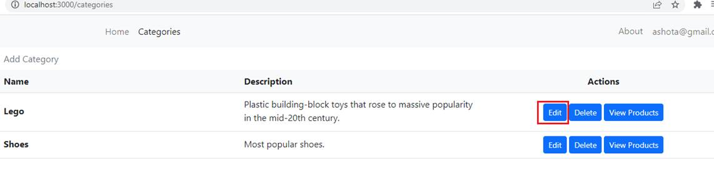
Figure 59
With this additional code it makes a lot of sense to use useFetcher to programmatically submit the form.
User Authentication
The goal always is that you have a user and you have your website and that user sends their credentials, email and password for example
and you then want to validate those credentials in your back-end code and grant the user access to protected resources if these credentials are valid.
One common approach for that is to validate credentials and then create and sign a cookie on the backend. In your backend code sign it with a secret
only you know so which is not known by the user. Then that session cookie that was generated can be sent to the user, it then stored on their machine
by the browser in a secure way and it can then be attached to outgoing requests to protected resources. Then you can check whether a valid cookie is attached
to those requests, to the protected resources and only if that is the case you grant access to those resources. That is the idea behind such a session cookie.
You create a session, you create such a cookie, you send it to the user, the user's browser stores it and then it is attached to requests to protected resources.
In your back-end code you therefore need code that generates that cookie and signs it but you also need code that validates the cookie and checks if a valid
cookie is attached to those requests for protected resources.
Figure 60
Authentication related code is defined in auth.server.js file to really make sure that this code never ends up on the front end.

Figure 61
First, we import createCookieSessionStorgae which will help us to create cookie-based sessions then we create it for 30 days.
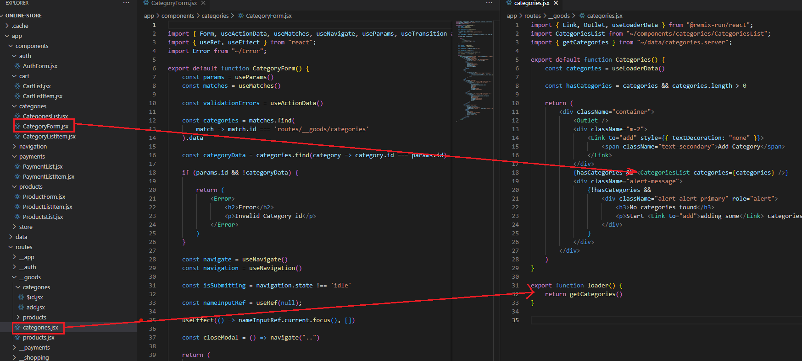
Figure 62
Then we create session cookies. We expect to get a userId of the authenticated user. In this function we use sessionStorage to get a session. Behind the scenes Remix will create a cookie for us.
We can then add some session data by using the set method on this session. We want to store the id of the user that is authenticated in that session, so in that cookie, and I will set that user Id key here.
Now, we must send that cookie to the user. We must generate a response. We want to redirect the user to a different page, because the user is on the auth page and attach that generated session cookie
to that outgoing redirect response. That cookie reaches the browser of the user and the browser will then automatically store the cookie. We redirect by getting the path as an argument.

Figure 63
At the end of the signin function we call createUserSession and pass the user id and the redirect path which is the root path.

Figure 64
The user is signing in.

Figure 65
After the sign in the session cookie was set and the user was redirected to the root path.

Figure 66
Here is the session cookie was set.
We should make sure that certain pages are not accessible and for that reason we can use their loaders to block navigation to these pages.
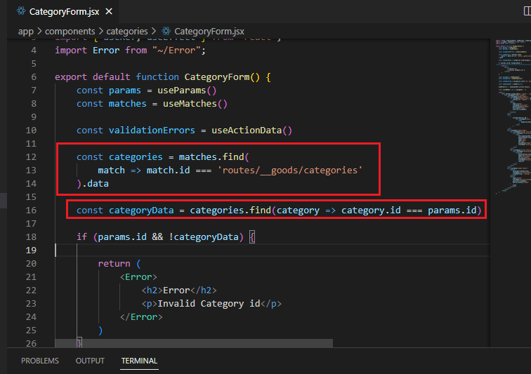
Figure 67
For example, payments.jsx route. We have a loader where we get our payments and here it would make sense to first of all to check whether we have a logged in user.
If that is not the case, we do not want to continue at all. Instead, we want to redirect the user away and not grant access to this page and its subpages.
Figure 68
For that we create requireUserSession function. We call getuUserFromSession which is one of the functions we created earlier. If a user is not authenticated, we throw redirect.
This is something we have not done before. We have thrown normal responses and we return to redirects, but we can also throw redirects. If we do that, we will not
trigger a catch boundary, but instead the user will simply be redirected.

Figure 69
We may need to check userId existence not in a single place but in many loaders. This is important to do that and you can just put it on a segment of all your routes because
the loaders and actions can be run independently and in parallel. This does needs to be applied to each one of these loaders and actions. If it becomes cumbersome, then
you can use Remix with some sort of middleware tool like Express. You can add a middleware that double checks the user's authenticates state there. There is nothing
currently built into Remix for that. So, we are going to be adding this requireUserSession on any page where we only want the authenticated user.
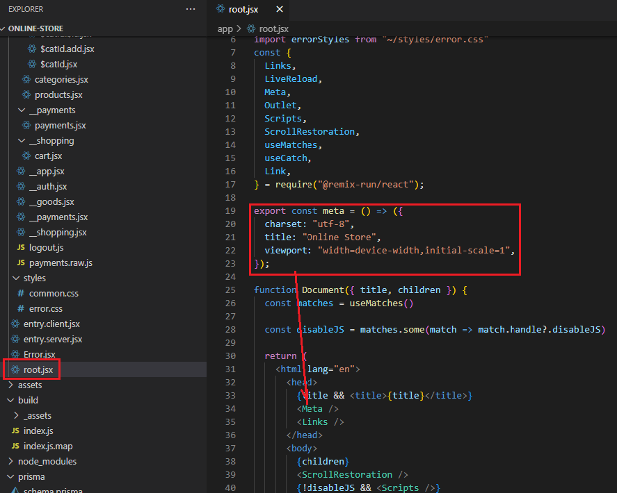
Figure 70
Metadata is added with a special function that can be exported I your route files and indeed the root route is exporting such a meta function already.
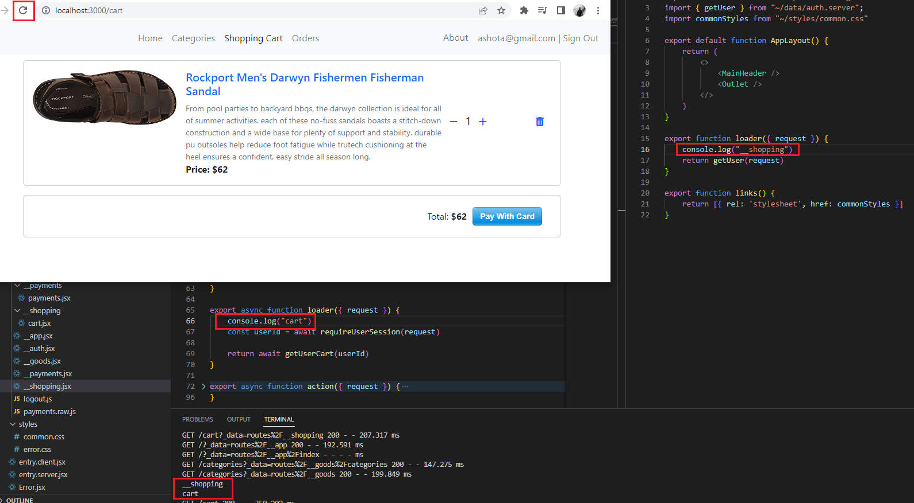
Figure 71
You can see Online Store title on the main page. When you reply on <Meta /> function then Remix will merge the metadata you define in meta() function with all
the other metadata set by any other routes automatically and will inject into the head section into this <Meta /> element.
Figure 72
In this dynamic $id route we output some dynamic info; the selected category title.

Figure 73
We edited first category and the tab's title was replaced with the category name.

Figure 73
We selected the second category and the category name Shoes was displayed as a title.
We can also attach custom response headers inside Remix. Suppose we want to add a header in our categories and products route.
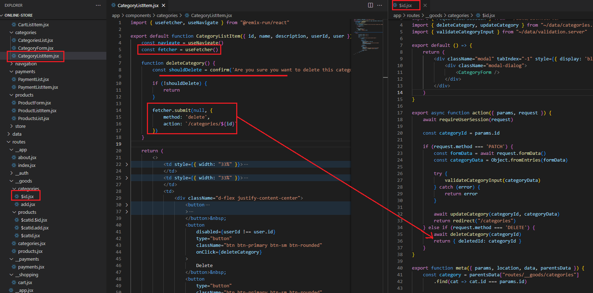
Figure 75
Remix provides us with the headers function which we export this inside our components. headers() should return an object where you specify your headers
that should be added to the page response. We added Cache-Control header with max-age of 3600 (60 minutes). We give the browser the extra information
that this page can be cached for up to 60 minutes and only thereafter a fresh copy should be requested.

Figure 76
If we go to categories page and reload it, you see that there we do have cache control response. If you make a change to this page, you will see that change after 60 minutes.

Figure 77
If we do a change to a parent route in our case in __app.js pathless route the change will not be picked up by a child route automatically which is, say, about.jsx. You can get
it from the parent route via parentHeaders and in this case you do not need to specify max-age 3600 in many places. We just get that value from the parent header and
max-age value can be modified in a single place.
Figure 78
There is a page in our app that can work without JavaScript. We do not need JavaScript on this About page as we have some static content.
Figure 79
Because that is the case, we could disable JavaScript for this page. The advantage would be that if we visit that page, we do not have to download all these JavaScript files.
These files are downloaded because after the initial request we are back to single age application and these files are needed to run that single page application.
If we would not load them the page could be served even faster. We would avoid unnecessary downloads.
Figure 80
In our root.jsx file we get this main document we find <Scripts/> component. This is the place where Remix injects all <script> tags to be downloaded.
If you remove them, you will see that we have no JavaScript files being downloaded.

Figure 81
We can export a simple constant called handle. handle allows you to store arbitrary data, for example disableJS (or any other name) set to true.
This is essentially some extra data which you can attach to your routes.

Figure 82
We can access it with help of useMatches hook. In the root component we call useMatches. Our constant disableJS will be true if we are on a page when any child route
has disableJS set in its handle object and has a value of true. We use that value to conditionally include our <Scripts />. If disableJS is false then it will be included otherwise will not.

Figure 83
If we reload About page now you will see that no scripts are included.

Figure 84
If we click on any of these navigation links it takes a second before we actually get navigated because we have to go and load all data. Data request actually may take a long time,
because we are in a slow network maybe. We can optimize this because normally the user hovers over a link for even maybe 500 milliseconds before they actually click.
Because Remix knows all of the CSS, JavaScript and the data that is needed by just looking at the URL, we can tell Remix to go ahead and start fetching all of that as soon as
the user shows some sort of indication that they want to go to that particular page. That is what we are going to do.
Figure 85
Links that are coming from Remix has a special prop on it called prefetch. intent means that when a user has an intent that they want to navigate to this
page, go ahead and prefetch everything.
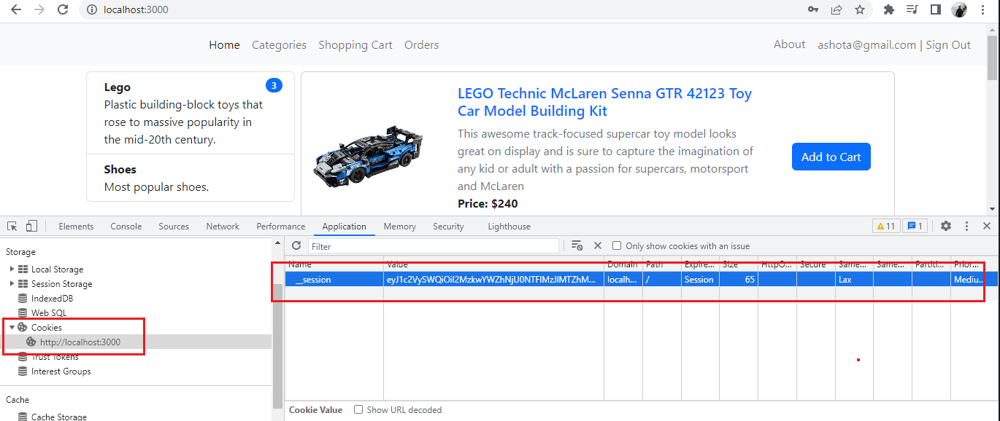
Figure 86
When I hover over categories link (not click) we start fetching the JavaScript as well as the data.
When I actually click on it, it is an instant transition.
Figure 87
We have got our payment service and our ultimate goal is to reach out to the stripe API and charge the users credit card for some amount. In order to charge users' credit card, we are going to install the
Node.js Stripe SDK https://www.npmjs.com/package/stripe. It is an NPM module that has a little bit of code inside of it to allow us to very easily communicate with the Stripe API. We are going to call a
method inside there to charge the users' credit card. We have to Stripe Web site http://stripe.com, sign up for an account and get an API key.

Figure 88
You see we have a Publishable key and Secret Key. Secret key is the one that we want to make use of inside of our project. It will allow us to reach out to the Strike API and somehow
charge a user's credit card. Note, we are on Test mode meaning no money will be charged and you do not even need to register a credit card.
Figure 89
For the testing purposes you can use 4242 4242 4242 4242 Card Information, any valid three-digit CVC such as 567 and any future date such as 12/34.